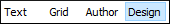

Working with the XML Schema Design Mode (XML Schema Diagram Editor)
This section includes topics that describe how to work with XML Schema documents in Design mode, including various features, actions that are available, and much more.
The Design mode in Oxygen XML Editor provides a simple and expressive XML Schema diagram editor for working with XML Schema documents. The schema diagram helps both the content authors who want to understand a schema and schema designers who develop complex schemas.
To switch to this mode, select Design at the bottom of the editing area. 
The diagram font can be increased using the usual Oxygen XML Editor shortcuts: (Ctrl + "+" (Meta + "+" on Mac OS)), (Ctrl +"-" (Meta +"-" on Mac OS)), (Ctrl + 0 (Meta + 0 on Mac OS)) or (Ctrl + mouse wheel (Meta + mouse wheel on Mac OS)). The whole diagram can also be zoomed with one of the predefined factors available in the Schema preferences panel. The same zoom factor is applied for the print and save actions.
For more information about designing XML Schemas, watch our video demonstration: